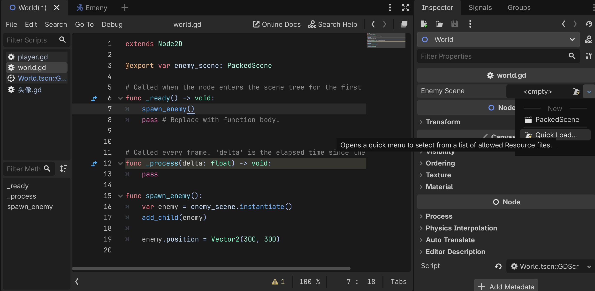

用 PackedScene 实例化敌人，掌握随机分布技巧
在独立场景 Enemy.tscn 中构建：

在主世界 World.gd 中处理生成逻辑：
# World.gd
extends Node2D
@export var enemy_scene: PackedScene # 引用 Enemy.tscn 文件
func spawn_enemy():
# 1. 实例化：在内存中创建对象
var enemy = enemy_scene.instantiate()
# 2. 坐标计算：设定随机坐标
var screen_size = get_viewport_rect().size
enemy.global_position = Vector2(
randf_range(0, screen_size.x),
randf_range(0, screen_size.y)
)
# 3. 挂载：将其加入场景树，正式激活节点
add_child(enemy)